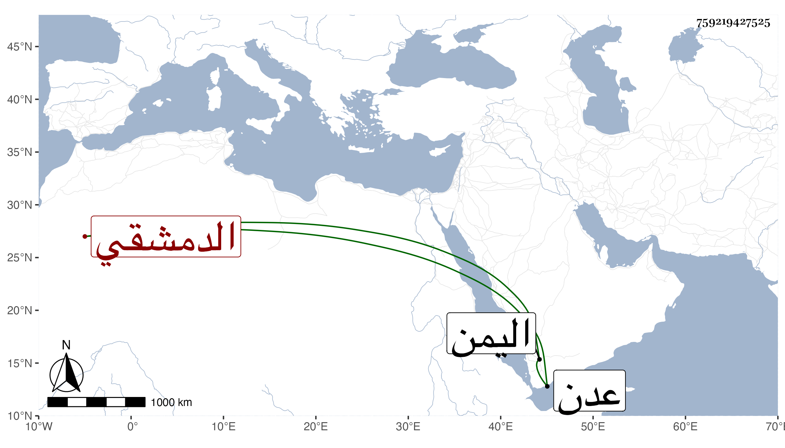

0902Sakhawi.DawLamic.ITO20230111-ara1.EIS1600.759219427525
Biography ID: 759219427525
421
محمد بن محمد بن علي البدر بن الخواجا الشمس الدمشقي بن البراق . قال شيخنا في إنبائه أنه نبغ في معرفة التجارة وسافر مرارا إلى اليمن وغيرها وصار أحد أكابر التجار . مات سنة اثنتين وعشرين بعدن قبل إكمال الثلاثين وفجع به أبوه ويقال إنه مات مسموما رحمه الله .
